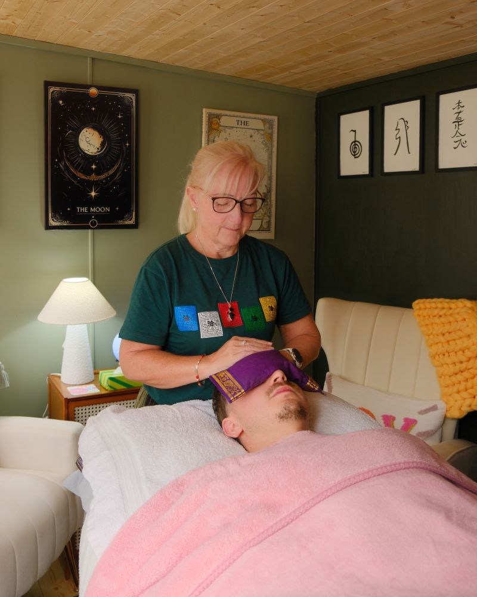
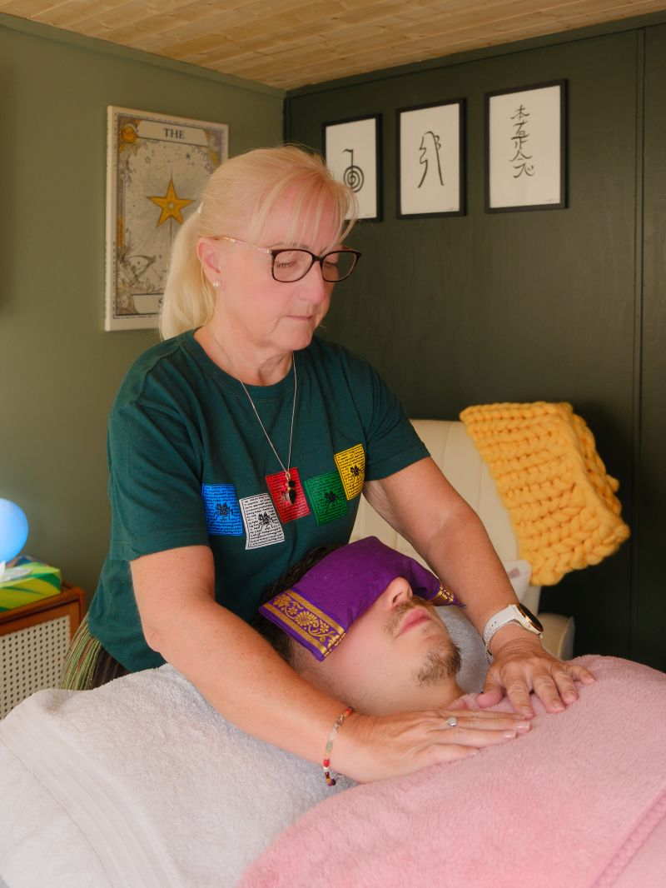
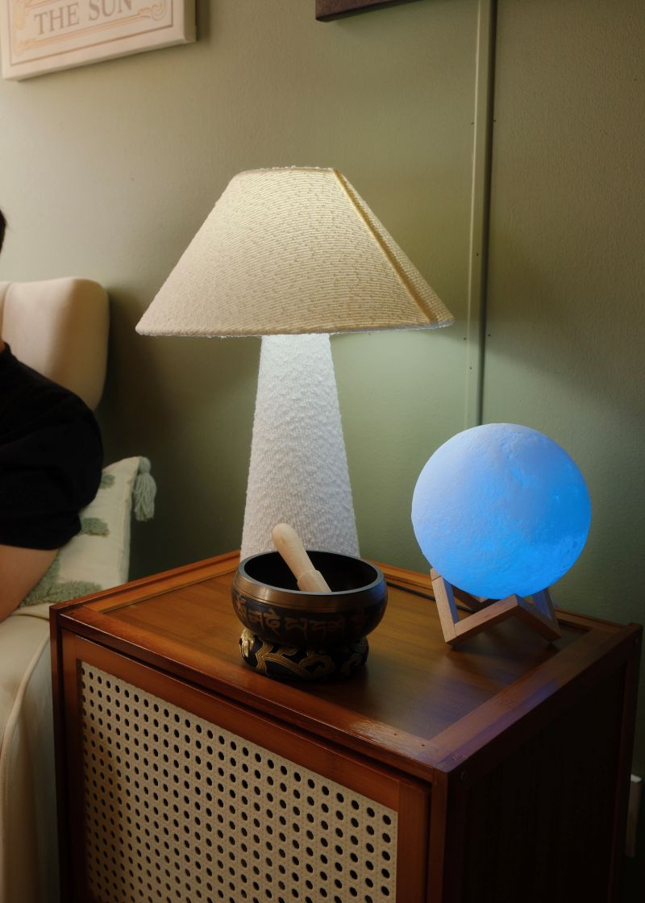
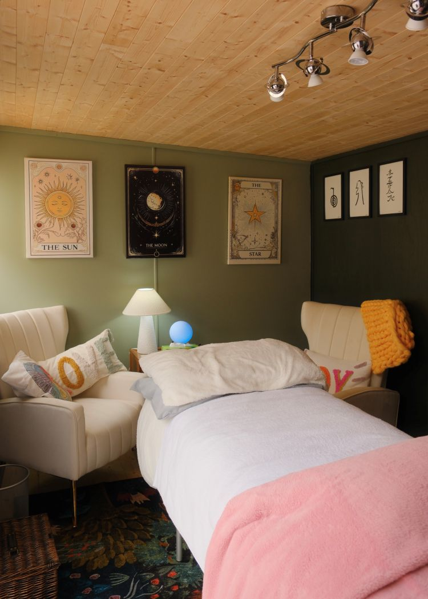

Reiki in Chester & Flintshire, created around calm and connection.
Personalised Reiki sessions from my private space in Penyffordd, Flintshire, welcoming clients from Chester, Cheshire and across North Wales.
ENQUIRE ABOUT REIKI ↗
A quieter way to make space for yourself.
Gentle & Unhurried
A calm session with time to settle, slow down and simply be present without pressure.

Personal to You
Every session is approached around your comfort, preferences and individual experience.
Private Setting
Reiki is available from my private space in Penyffordd, Flintshire, close to Chester.
Reiki in Penyffordd
A complementary wellbeing practice offered in a calm, welcoming environment.
Local & Accessible
Reiki sessions in Penyffordd for clients from Chester, Flintshire, Mold, Buckley, Wrexham, Deeside, Cheshire and across North Wales.
A CALM, PRIVATE SPACE TO PAUSE, SLOW DOWN AND GIVE YOURSELF TIME AWAY FROM EVERYDAY DEMANDS.
Reiki is a complementary wellbeing practice offering you a quiet, personal space to step away from everyday demands and focus on yourself. Sessions are gentle, unhurried and centred around your comfort.



Reiki in Penyffordd, close to Chester.
If you are searching for Reiki in Chester, Reiki in Flintshire or a private complementary wellbeing service in North Wales, sessions are available from my space in Penyffordd.
I welcome clients from Chester, Mold, Buckley, Wrexham, Deeside, Cheshire and surrounding areas of North Wales.
Check Reiki Availability ↗Where can I book Reiki near Chester?
Talk with Sian offers Reiki sessions from a private space in Penyffordd, Flintshire. Clients are welcome from Chester, Cheshire, Flintshire and across North Wales.
Frequently Asked Questions
What is Reiki? +
Reiki is a complementary wellbeing practice in which the practitioner places their hands lightly on, or just above, the body. Sessions are generally quiet, gentle and relaxed.
Where can I book Reiki near Chester? +
Reiki sessions with Talk with Sian are available from a private space in Penyffordd, Flintshire, close to Chester.
Do I remain clothed during Reiki? +
Yes. You normally remain comfortably clothed throughout the Reiki session.
Is Reiki a medical treatment? +
No. Reiki is a complementary wellbeing practice and is not a replacement for medical, psychological or other professional healthcare.
Which areas do you welcome Reiki clients from? +
I welcome Reiki enquiries from Penyffordd, Chester, Flintshire, Mold, Buckley, Wrexham, Deeside, Cheshire and the wider North Wales area.
Can I ask questions before booking? +
Absolutely. You can message me on WhatsApp or use the contact page if you would like to ask anything before arranging a Reiki session.
Looking for Reiki in Chester or Flintshire? Book a Reiki session in Penyffordd.
I offer personalised Reiki sessions in Penyffordd, Flintshire, conveniently located for clients travelling from Chester, Mold, Buckley, Wrexham, Deeside, Cheshire and across North Wales. Sessions take place in a calm, private setting and are approached gently around your comfort and individual needs.
If you are searching for a Reiki practitioner near Chester or would like to know more about Reiki before arranging a session, get in touch with me.